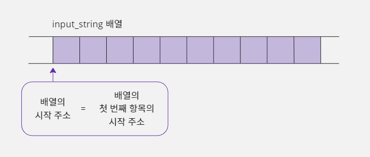
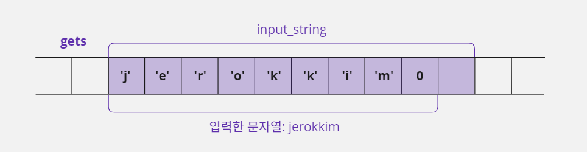
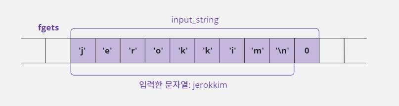
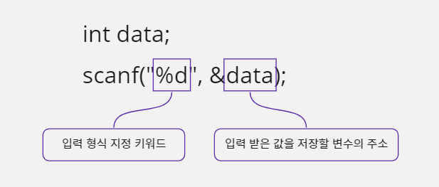
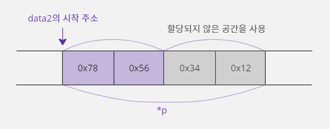

14. 표준 입력 함수
14-1. 표준 입력 함수
표준 입력 함수란?
- 키보드, 마우스 등 다양한 입력 장치 중에서 사용하는 시스템이 가장 기본으로 생각하는 장치를 '표준 입력 장치'라고 부른다.
- C 언어는 이런 장치로부터 데이터를 입력 받는 표준 입력 함수(Standard Input Function)를 제공한다.
표준 입력 함수의 동작 원리
- 표준 입력 함수는 시스템의 여러 가지 입력 장치를 표준화하기 위해, 장치의 입력 정보를 읽는 것을 컴퓨터가 파일에서 데이터를 읽는 것처럼 구성한다.
- 이 방법은 입력되는 값들을 하나씩 바로 처리하지 않고 일정한 조건이 될 때까지 차곡차곡 모았다가 처리한다.
- 입력을 효과적으로 처리하기 위한 것이다.
- 예를 들어 키보드를 사용하는 시스템에서 표준 입력 함수를 사용하면 입력 완료를 의미하는 [Enter]키를 누를 때까지 해당 함수가 완료되지 않는다.
- 따라서 'A'라는 문자 한 개를 입력 받고 싶더라도 [A]키를 누른 후에 [Enter]키를 눌러야 표준 입력 함수가 처리된다.
입력 값을 임시로 저장하는 표준 입력 버퍼
- 이렇게 특정 키를 누를 때까지 사용자 입력을 임시로 저장하는 메모리를 '표준 입력 버퍼'라고 한다.
- 이 입력 버퍼는 운영체제가 제공한다.
- 표준 입출력을 사용하는 시스템을 위해 별도의 메모리가 배정되어 있다.
- 그런데 여러 개의 정보를 입력하고 [Enter]키를 눌렀는데 입력 버퍼에 있는 내용을 전부 사용하지 않았다면 다음에 호출하는 표준 입력 함수에 영향을 미치므로 주의해야 한다.
- 이 부분에 대해 단계를 나눠서 살펴보자.
- 키보드에서 "abc"입력
- 입력 버퍼에 "abc"저장
- [Enter] 입력
- 문자를 한 개만 입력 받는 표준 입력 함수이므로 입력 버퍼에서 a만 사용함
- 입력 버퍼에 있는 내용을 다써버리지 못하고 b, c가 남음
- 문자를 한 개만 입력 받는 표준 입력 함수를 다시 호출하면, 남아 있던 b가 사용되어 버림
- 표준 입력 함수들은 [Enter]키를 누를 때까지 계속 입력을 받기 때문에 문자 한 개만 누른다고 입력이 끝나지 않는다.
- 따라서 사용자가 실수로 "abc"라고 입력하고 [Enter]키를 누르면 입력 버퍼에는 "abc"가 저장된다.
- 입력 버퍼는 특정 키를 누를 때까지 사용자 입력을 임시로 저장하기 때문이다.
- 하지만 문자 한 개만 입력 받는 함수를 호출했기 때문에 a, b, c 중에 a만 사용하고 b와 c는 입력 버퍼에 남게 된다.
- 이 상황에서 다시 문자 한 개를 입력 받는 표준 입력 함수를 호출하면 사용자가 아무 것도 입력하지 않았는데도 b가 입력되었다고 처리해 버린다.
- 왜냐하면 입력 버퍼에 b, c의 입력 정보가 남아 있기 때문이다.
입력 버퍼를 초기화하는 rewind 함수
- 입력 버퍼에 남아 있는 입력 정보를 모두 지우고 싶다면 표준 입력 장치를 가리키는
stdin포인터와rewind함수를 사용하여 표준 입력 버퍼를 초기화하면 된다.- 여기서 사용한 '초기화'라는 용어는 앞에서 봤던 '변수의 초기화'와는 조금 의미가 다르다.
- 입력 버퍼를 초기화 한다는 것은 입력된 정보를 전부 지우고 입력에 사용되는 모든 정보를 초기 상태로 만든다는 뜻이다.
stdin포인터를 사용하면 장치에서 입력한 값을 얻을 수 있다.
rewind(stdin); // rewind 함수를 사용하면 입력 버퍼를 초기화할 수 있음
- 입력 정보가 버퍼에 남아 있는 문제는 표준 입력에서 자주 발생하기 때문에 표준 입력의 원리를 다시 한번 정리해 보자.
- 입력 버퍼에 사용자가 입력한 키 정보가 남아 있으면 표준 입력 함수는 해당 값을 사용한다.
- 그리고 입력 버퍼에 내용이 없으면 [Enter]키를 누를 때까지 데이터를 입력 받은 후 표준 입력 함수가 동작한다.
- 따라서 입력 버퍼에 입력한 키 정보가 남아 있다면 사용자가 추가로 입력하지 않아도 함수가 동작하게 된다.
- 그러므로 입력을 구별하고 싶다면
rewind함수를 사용해 입력 버퍼를 초기화해야 한다.
14-2. 문자와 문자열 입력 함수
- 표준 입력 함수 중에서 자주 사용하는 함수 몇 가지를 살펴보자.
- 표준 입력 함수는
stdio.h(Standard Input Output Header)파일에 정의되어 있으므로#include전처리기를 사용해서 이 파일을 참조해야 한다.
문자 한 개를 입력 받는 getchar 함수
getchar함수는 키보드(컴퓨터의 표준 입력 장치)로부터 문자 하나를 입력 받는 표준 입력 함수이다.- 이 함수를 사용할 때, 문자 한 개를 입력 받더라도 [Enter]키를 눌러야만 작업이 완료된다.
#include <stdio.h>
void main() {
int input_data;
// 표준 입력 함수를 사용하여 문자를 한 개 입력 받음
input_data = getchar();
// 입력 받은 문자를 출력함
printf("input : %c\n", input_data);
}
getchar함수는int형식으로 데이터를 반환한다.- 그래서
int형 변수로 반환값을 받는 게 일반적이지만,char형 변수로 받아도 된다.
getchar 함수는 왜 char형 변수로 반환값을 받아도 되는가?
stdio.h헤더 파일을 열어getchar함수의 원형을 보면int형을 반환하도록 되어 있다.- 이것은 확장키 값(키보드의 [F1]이나 숫자 키패드, 또는 특수키)를 위해서 정의된 것이다.
int getchar(void);
- 하지만 우리가 일반적으로 사용하는 입력 문자들은 대부분 1바이트 정보를 가지고 있기 때문에 특수한 프로그램을 만들지 않는 이상 1바이트만 사용해도 충분하다.
- 그렇기 때문에
getchar함수의 반환값을char형 변수로 받아 사용해도 문제가 생기지 않는다.
getchar 함수를 사용할 때 주의할 점
- 한 번에 문자 한 개씩 총 두 번 입력된 문자를 출력하는 코드를 작성해 보자.
#include <stdio.h>
void main() {
int input_data;
// 표준 입력 함수를 사용하여 문자를 한 개 입력 받음
input_data = getchar();
printf("first input : %c\n", input_data); // 입력 받은 문자를 출력함
input_data = getchar();
printf("second input : %c\n", input_data); // 입력 받은 문자를 출력함
}
a [Enter]입력
first input : a
second input :
- 위 예제는
a만 입력하고 [Enter]키를 눌렀는데getchar함수가 한꺼번에 동작해 버려서 두 번째 문자를 입력 받지 못하고 프로그램이 끝나게 된다. - 좀 더 정확하게 이야기하자면 첫 번째
getchar함수는a를 입력 받아서 정상적으로 출력하지만 두 번째getchar함수는 첫 번째 입력 받을 때 함께 입력된 [Enter]키의 값(10, \n)을 받게 되어 아무것도 출력하지 않고 줄 바꿈만 한 번 더 일어난다는 것이다. - [Enter]키는 아스키코드 값으로는 10이고, C 언어에서 문자로 표시할 때
\n이라고 적는다. - 이 문제를 해결하는 방법은 여러 가지이다.
해결 방법 1
- 사용자가 반드시 한 번에 한 개의 문자만 입력하고 [Enter]키를 누른다고 가정하자.
- 그러면
getchar함수를 하나 더 써서 표준 입력 버퍼에 저장된 쓸모없는 [Enter]키 값이 출력되지 않도록 제거할 수 있다.
input_data = getchar(); // a와 b는 getchar 함수를 통해 정상적으로 입력된다
getchar(); // [Enter]키 값은 getchar 함수를 통해 제거된다
printf("first input : %c\n", input_data);
input_data = getchar(); // a와 b는 getchar 함수를 통해 정상적으로 입력된다
getchar(); // [Enter]키 값은 getchar 함수를 통해 제거된다
printf("second input : %c\n", input_data);
- 즉
getchar함수의 원래 기능인 '문자 한 개 입력 받기'로 사용한 것이 아니라 단순히 [Enter]키 값이 출력되지 않도록 이 함수를 사용한 것이다. - 따라서
getchar함수의 반환값인 [Enter]키 값은 변수에 저장할 필요가 없다. - 이제 사용자가 한 번에 한 개의 문자를 입력하고 [Enter]를 누르면 정상적으로 동작한다.
해결 방법 2
- 사용자가 한 번에 한 개의 문자만을 입력한다고 확신할 수 없다면 위에서 설명한 방법으로는 문제를 해결할 수 없다.
- 즉
getchar함수를 추가해서 함께 입력되는 [Enter]키 값을 제거하는 방법은 사용자가 몇 개의 키를 입력할지 예상할 수 없는 상황에서는 근본적인 해결책이 아니다. - 결국 이 문제는 사용자가 입력한 한 개의 문자 외에 다른 문자들이 입력 버퍼에 남아서 생기는 문제이다.
- 따라서 한 개의 문자만 입력 버퍼에서 가져오고 입력 버퍼를 초기 상태로 비워서 남아 있는 문자들을 모두 제거하면 문제를 해결할 수 있다.
#include <stdio.h>
void main() {
int input_data = getchar(); // 한 개의 문자를 입력 받음
rewind(stdin); // 표준 입력 버퍼에 있는 모든 입력 값을 제거함
printf("first input : %c\n", input_data); // 입력 받은 문자를 출력함
input_data = getchar();
rewind(stdin); // 표준 입력 버퍼에 있는 모든 입력 값을 제거함
printf("second input : %c\n", input_data); // 입력 받은 문자를 출력함
}
ab [Enter] 입력
first input : a
dd [Enter] 입력
second input : d
- 표준 입력 버퍼에 입력된 키 중에서 첫 번째 값만 받아들이고
rewind함수를 사용해서 입력 버퍼에 있는 나머지 입력 값을 모두 지워 버리는 것이다.
getc 함수
getchar함수는 또 다른 표준 입력 함수인getc함수로 대체할 수 있다.getc함수를 사용하여 키보드로 입력할 때는 표준 입력 장치를 의미하는stdin을 인수로 넘겨줘야 한다.
input_data = getc(stdin);
- 그런데 원래
getc함수는 문자 하나를 입력 받기 위해 만들어진 함수였다. getc함수는 표준 입출력뿐만 아니라 파일 입출력에도 사용된다.- 파일을 열고 해당 파일 포인터를
getc함수의 매개변수로 넘겨주면 파일에서 1바이트씩 정보를 읽어 사용자에게 전달해 주는 역할을 한다. getc함수에 파일 포인터가 아니라 표준 입출력 주소를 넘겨주면, 입력 장치에서 입력을 받아 문자를 한 개씩 출력할 수 있다.- 이 기능만 별도로 떼어 와서 정의한 게 바로
getchar함수이다. - 표준 입력 함수의 사용 빈도가 높은데
getc함수에stdin을 계속 인자로 넘기는 것이 불편하기 때문에getchar함수를 재정의해 놓은 것이다. - 결론적으로
getchar함수는getc함수를 이용해 만든 함수라고 생각하면 된다.
문자열을 입력 받는 gets 함수
gets함수는 get string의 줄임 표현이며 문자열을 입력 받는 표준 입력 함수이다.getchar함수와 달리gets함수는 한 번에 여러 개의 문자를 입력 받을 수 있으며 [Enter]키를 입력할 때까지 입력한 모든 문자를 하나의 문자열로 간주한다.- 그리고 문자열을 저장하기 위해서
gets함수의 매개변수에char배열로 선언된 변수(input_string)의 시작 주소를 넘겨주어야 한다.
char input_string[10];
gets(input_string);
주소를 넘겨주는데 왜 & 연산자를 쓰지 않을까?
- 배열의 각 요소는 메모리에 연속적으로 나열되기 때문에 배열의 첫 번째 요소의 시작 주소는 배열의 시작 주소와 같다.

- 그렇기 때문에 배열이 시작 주소를 적을 때 첫 번째 요소의 주소인
&input_string[0]으로 적는 것이 정확한 표현이다.- 하지만 첫 번재 요소의 시작 주소와 배열의 시작 주소는 같기 때문에,
input_string이라고 적으면 컴파일러가 번역할 때&input_string[0]이라 적은 것과 같게 번역한다.- C 언어에서는 약간의 편의성을 위해 생략할 수 있는 것들은 최대한 생략할 수 있게 배려하고 있다.
- 그래서
gets(&input_string[0]);이라고 적지 않고gets(input_string);이라고 적을 수 있는 것이다.- 물론
input_string이라고 쓰지 않고 원칙대로 다 써도 된다.
gets함수로 문자열을 입력 받는 코드를 작성해 보자.
#include <stdio.h>
void main() {
// 문자열은 마지막에 NULL 문자 0을 포함해야 하므로 최대 9개의 문자까지 저장 가능함
char input_string[10];
gets(input_string); // 문자열을 입력 받아 input_string에 저장함
printf("input : %s\n", input_string); // 입력 받은 문자열을 출력함
}
jerok [Enter] 입력
input : jerok
gets함수는 [Enter]키까지 입력 버퍼에서 읽어와 처리하므로 입력 버퍼에 [Enter]키가 남아 있지 않다.- 따라서
rewind함수를 사용하여 입력 버퍼를 초기화할 필요가 없다. - 그리고 [Enter]키를 입력 버퍼에서 가져온다고 해서 [Enter]키 값을 문자열에 포함시키는 것이 아니라 입력 완료의 기준으로만 사용하기 때문에 실제 문자열에는 [Enter]키를 입력한 위치에 NULL 문자 0이 들어가게 된다.

- 배열에 jerokkim 문자열 자체가 들어가는 게 아니라 jerokkim에 대한 아스키코드가 들어가는 게 정확한 표현이다.
- 따라서 각 문자에 들어가는 아스키코드를 의미하기 위해
'j','e','r'처럼 작은 따옴표를 써야 정확하다.
gets 함수가 정의되어 있지 않다면 fgets 함수를 사용하자
- 만약 내가 사용하는 컴파일러에서
gets함수가 정의되어 있지 않다는 오류가 발생한다면gets함수 대신fgets함수를 사용하면 된다.fgets는 파일에서 데이터를 읽어오는 함수인데 파일 대신 표준 입력 장치를 의미하는stdin을 사용하면 표준 입력 버퍼에서 문자열을 받아올 수 있다.- 그래서
gets함수와 같게 동작한다.char input_string[10]; fgets(input_string, 10, stdin);
fgets함수의 두 번째 매개변수에 10을 사용했는데 이 값은 사용자가 입력한 문자열을 저장할 메모리(input_string)의 최대 크기이다.- 즉
input_string배열의 크기가 10이기 때문에 10을 적은 것이다.- 그리고
fgets함수를 사용하는 경우에는 문자열 끝에 [Enter]키 값이 포함된다.- [Enter]키는 아스키코드 값이 10이며 C 언어에서는
\n으로 표시한다.
gets 함수에서 사용자 키 입력 취소 처리하기
- 표준 입력을 받는 중에 프로그램의 중지를 의미하는 [Ctrl] + [C]키를 사용자가 입력하면 표준 입력이 취소되고 프로그램이 중지된다.
- 사용자가 키보드로 문자를 입력하던 중에 [Ctrl] + [C]키를 입력하면 입력 버퍼에 들어 있는 문자들이
input_string배열에 복사되지 않은 상태로gets함수가 종료된다. - 그리고
printf에서input_string배열 내용을 그대로 출력하므로 엉뚱한 값이 출력된다. - 지역 변수는 명시적으로 초기화하지 않으면 어떤 값이 들어 있을지 예상할 수 없다.
- 이런 값들을 쓰레기 값이라고 부른다.
- 따라서
gets함수를 사용하여 문자열을 입력 받을 때는 사용자가 정상적으로 입력을 완료하지 않는 상황에 대처할 수 있도록 코드를 구성해야 한다. - 이것은
gets함수의 반환값을 확인해서 처리할 수 있다. gets함수는 사용자 입력이 정상적으로 완료되지 않았다면 '해당하는 메모리 주소가 없음'을 의미하는 널(Null) 값을 반환하고, 성공적으로 입력했다면input_data배열의 시작 주소를 반환한다.
NULL을 사용할 때 주의할 점
NULL은stdio.h파일에 선언되어 있으며 '값이 없음'이라는 뜻을 기본적으로 가지고 있다.- 따라서
NULL대신 0을 사용해도 컴파일러가 적절하게 판단하여 성공적으로 번역한다.- 하지만 프로그래머들은 대개
NULL을 '메모리 주소가 없음'으로 이해하기 때문에 0과NULL을 구별해서 사용하는 것이 프로그래머들 간에 오해를 줄일 수 있다.#define NULL ((void *)0) // stdio.h에 정의되어 있음
- 사용자의 입력을 취소할 수 있도록 예제를 수정해 보자.
#include <stdio.h>
void main() {
char input_string[10];
// 반환값이 NULL이 아니라면 문자열을 입력 받아서 input_string에 저장함
if (NULL != gets(input_string)) {
printf("input : %s\n", input_string); // 입력 받은 문자열을 출력함
} else {
printf("input -> Canceled\n"); // 사용자 입력이 정상적으로 완료되지 않아 반환값이 NULL일 때 출력할 문구
}
}
gets 함수에서 키 입력 횟수 제한하기
gets함수는 입력 받은 문자열의 개수를 제한하는 기능이 없기 때문에 자신이 예상한 길이보다 더 긴 문자열이 입력되는 경우에 프로그램이 비정상적으로 종료된다.- 즉 앞의 예제에서
input_string배열에 문자를 9개까지만 저장할 수 있기 때문에 사용자가 문자를 10개 이상 입력한 뒤 [Enter]키를 누르면 오류가 발생한다.fgets함수는 두 번째 매개변수를 사용하여 사용자가 입력하는 문자열의 개수를 제한하기 때문에 예상한 길이보다 길게 입력되는 문자열을 처리할 수 있다.
- 이 문제는
gets함수 자체의 한계 때문에 발생하는 문제라서 다른 대안이 필요하다. - 이 문제는
gets함수 안에서 문자열을 입력 받는 과정에서 발생하기 때문에gets함수의 소스 코드를 변경하지 않고는 해결할 수 없다. - 그런데
gets함수는 표준 입력 함수이기 때문에, 이미 만들어져 있는gets함수의 소스 코드를 프로그래머가 변경할 수 없다. - 따라서
gets함수와 비슷한 함수를 프로그래머가 직접 만들어서 이 문제를 해결해야 한다. - 다음 예제는 문자를 한 개씩 입력 받아 처리하는
getchar함수를 사용하여 마치gets함수처럼 문자열을 처리함으로써 이 문제를 해결한 것이다.
#include <stdio.h>
int GetMyString(char buffer[], int limit) {
// buffer는 사용자가 입력한 문자열을 저장할 배열이며 limit는 최대 입력 가능한 문자 개수이다.
// 이 함수가 1을 반환하면 정상 입력되었다는 뜻이고, 0을 반환하면 너무 길게 입력해서 제한된 개수만 받았다는 뜻이다.
int i;
for (i = 0; i < limit; i++) { // 최대 개수만큼 반복함
buffer[i] = getchar();
if (buffer[i] == '\n') { // [Enter]키가 체크되면 사용자 입력이 완료되었다는 뜻이므로 문자열을 완성한 뒤 함수를 종료한다.
buffer[i] = 0; // [Enter]키 위치에 0을 넣어서 문자열을 완성함
return 1; // 정상적으로 입력이 완료됨
}
}
buffer[i] = 0; // 반복문을 빠져나왔다는 뜻은 입력 개수 제한을 초과했다는 뜻이므로 현재 위치에 0을 넣고 문자열을 완성한다.
rewind(stdin); // 표준 입력 버퍼에 남아 있는 문자들을 제거함
return 0; // 입력 초과 현상이 발생했음을 알림
}
void main() {
char temp[10];
int state;
// 사용자에게 최대 9개까지만 입력 받겠다고 제한함
state = GetMyString(temp, 9);
if (state == 1)printf("input : %s\n", temp); // 정상 입력함
else printf("input : %s -> out or range\n", temp); // 범위를 초과함
}
i am a developer [Enter] 입력
input : i am a de -> out or range
- 이렇게
GetMyString함수를 직접 만들어 사용하면 사용자의 입력 개수를 명시적으로 제한하여 프로그램이 비정상적으로 종료되는 상황을 막을 수 있다.
14-3. 문자열을 정수로 변환하기
문자열을 정수로 변환해 사용하기
gets함수를 사용하다 보면 오류는 아니지만 또 다른 불편함이 있다.gets함수가 문자열을 입력 받는 함수이기 때문에 "12345"와 같이 숫자 형태로 입력하더라도 정수가 아닌 문자열로 인식한다.- 이렇게 문자열로 인식하면 산술 연산을 할 수 없을 것이다.
- 예를 들어 사용자에게 두 개의 숫자를
gets함수로 입력 받고 그 숫자를 합산해서 출력하는 프로그램을 만들 경우, 입력 받은 두 숫자가 문자열이기 때문에 합산을 할 수 없다는 뜻이다. - 따라서
gets함수로 입력 받은 값을 가지고 덧셈 연산을 하려면 문자열을 정수 값으로 변환해서 사용해야 한다.
1단계: 아스키코드 표를 이용해 문자열을 정수로 변환하기
- 문자열을 정수 값으로 변환하는 방법은 의외로 간단하다.
- 컴퓨터에서 사용하는 문자들을 숫자와 연결시켜 주는 아스키코드 표에서 숫자는 '0'부터 '9'까지 순차적으로 나열되어 있다.
- 각 문자로 된 숫자의 아스키코드 값을 확인해 보면 문자 '0'이 48, 문자 '1'이 49, 문자 '2'가 50, 문자 '3'이 51 ⋯ 의 순서로 되어 있다.
- 따라서 문자로 된 숫자의 시작 값인 문자 '0'의 아스키코드 값을 각 숫자 형식의 문자에서 빼면 정수 형태이 숫자 값으로 바뀌게 된다.
'0' - '0' => 48 - 48 => 0 : 문자 '0'이 숫자 0으로 변환
'1' - '0' => 49 - 48 => 1 : 문자 '1'이 숫자 1로 변환
'2' - '0' => 50 - 48 => 2 : 문자 '2'가 숫자 2로 변환
'3' - '0' => 51 - 48 => 3 : 문자 '3'이 숫자 3으로 변환
- "123"이라는 문자열을 숫자 123으로 변환하고 싶으면 문자 '1', '2', '3'을 하나씩 숫자로 변환하고 각 숫자를 100의 자리, 10의 자리, 1의 자리에 맞춰서 123으로 재구성해야 한다.
'1' - '0', '2' - '0', '3' - '0' => 1, 2, 3
- 그 다음으로 1은 100의 자릿수이기 때문에 100을 곱하고 2는 10의 자릿수이기 때문에 10을 곱하고 3은 1의 자릿수이기 때문에 1을 곱해서 이 수들을 합산하면 123이 된다.
('1' - '0') x 100 + ('2' - '0') x 10 + ('3' - '0') x 1 = 1 x 100 + 2 x 10 + 3 = 123
- 이제 위와 같은 기능을 소스 코드로 작성해 보자.
#include <stdio.h>
void main() {
// pos_num은 각 자릿수에 곱할 숫자, num은 정수로 변환될 숫자를 저장할 변수
int pos_num = 100, num = 0, i, temp_num;
// 정수로 변환할 문자열
char num_string[4] = "123";
for (i = 0; i < 3; i++) {
// 배열의 각 항목을 문자에서 정수로 변경함
temp_num = num_string[i] - '0';
// 정수화된 숫자에 자릿수에 해당하는 숫자를 곱해서 합산함
num = num + temp_num * pos_num;
// 다음 자릿수를 구성하기 위해 10을 나눔. 100 -> 10 -> 1
pos_num = pos_num / 10;
}
// 변환될 정수 값을 %d를 사용해서 출력함
printf(" %s -> %d\n", num_string, num);
}
123 -> 123
문자열 정수
num_string에 저장되어 있는 문자열 "123"을 정수 123으로 변경하려면 반복문을 사용하여 배열의 각 요소에 들어 있는 문자를 숫자로 만들어주어야 한다.- 문자를 숫자로 만들려면
num_string[i]에 저장된 문자 값에서 '0'값을 빼면 된다. - 그리고 문자를 숫자로 변경하면서 현재 자릿수에 해당하는 값을 가지고 있는
pos_num을 곱해서num이라는 변수에 합산하는 형식으로 작업을 진행하면 최종적으로num에 정수 값 123이 저장된다. - 하지만 이 예제처럼 코드를 구성하면 딱 3자리로 구성된 문자열만 숫자로 변환할 수 있다.
- 좀 더 다양한 길이의 문자열("1234", "56", ⋯ )을 숫자로 만들려면 자릿수와 반복 횟수를 고정하면 안 된다.
- 그래서 다음 예제처럼 문자열의 길이를 구해서 자릿수와 반복 횟수로 사용하면 다양한 문자열을 숫자로 만들 수 있다.
#include <stdio.h>
#include <string.h> // 문자열 길이를 구하는 strlen 함수를 포함하는 헤더 파일
void main() {
int pos_num = 1, num = 0, i, count;
char num_string[4] = "123";
// 문자열의 길이를 구해서 count 변수에 저장하면 count에 3이 저장됨
count = strlen(num_string);
// 문자열의 길이보다 1만큼 작게 반복해야 함
for (i = 0; i < count - 1; i++) pos_num = pos_num * 10;
// 문자열의 길이만큼 반복함
for (i = 0; i < count; i++) {
num = num + (num_string[i] - '0') * pos_num;
pos_num = pos_num / 10;
}
printf("%s -> %d\n", num_string, num);
}
123 -> 123
문자열 정수
숫자 형식의 문자열을 정수로 만드는 좀 더 간단한 표현
- 지금까지 본 예제는 자릿수에 곱할 숫자를 미리 구성하고 변환하는 방식을 사용했다.
- 자릿수에 곱할 숫자를 미리 구성하지 않고 문자열 순서대로 각 문자를 정수로 만들면서 명령을 반복할 때마다 10을 곱하면 결국 같은 결과 값을 얻을 수 있다.
- 새롭게 사용할 방식은 배열의 각 요소 값을 계산할 때 별도의 자릿수 값을 곱하는 것이 아니라 일정하게 10을 곱해서 사용하기 때문에 문자열의 길이도 계산할 필요가 없다.
#include <stdio.h>
void main() {
int num = 0, count = 0;
char num_string[4] = "123";
// 문자열이 끝날 때까지 반복함
while (num_string[count] != 0) {
num = num * 10 + (num_string[count] - '0');
count++; // 다음 문자로 이동함
}
printf("%s -> %d\n", num_string, num);
}
123 -> 123
- 이렇듯 프로그래밍을 하다 보면 약간의 생각 전환을 통해서 소스 코드가 간결하게 변경되는 경우가 있다.
- 이런 생각을 좀 더 잘하려면 프로그램을 많이 작성해 보는 것도 좋지만 알고리즘(Algorithm)이나 오토마타(Automata) 같은 이론을 공부하는 것이 더 좋다.
2단계: 숫자 형식의 문자열을 처리하는 함수 만들기
- 숫자 형태로 구성된 문자열을 정수로 바꾸는 함수는 사용 빈도가 높다.
- 그래서 함수로 구성해 놓고 프로그램에서 사용하는 것이 좋다.
- 다음 코드는
gets함수를 사용하여 사용자에게 두 개의 숫자를 입력 받아서 합산하는 예제이다.
#include <stdio.h>
int ArrayToInteger(char string[]) { // 문자열을 정수로 바꾸는 함수이다
int count = 0, num = 0;
// 문자열이 끝날 때까지 반복함
while (string[count] != 0) {
// 반복할 때마다 이전 값에 10을 곱해서 자릿수를 증가시킴
num = num * 10 + string[count] - '0';
count++; // 다음 문자로 이동
}
return num;
}
void main() {
int first_num, second_num;
char first_string[16], second_string[16];
printf("input first number :");
gets(first_string); // 첫 번째 문자열을 입력 받음
printf("input second number :");
gets(second_string); // 두 번째 문자열을 입력 받음
first_num = ArrayToInteger(first_string); // 문자열 -> 정수
second_num = ArrayToInteger(second_string); // 문자열 -> 정수
// 정수로 변환된 두 수를 합산한 결과 값을 출력함
printf("%d + %d = %d\n", first_num, second_num, first_num + second_num);
}
input first number :1212
input second number :212
1212 + 212 = 1424
- 위 예제는 사용자가 숫자를 입력할 때 너무 길게 입력하면 오류가 발생할 수 있기 때문에
gets함수 대신 앞에서 만든GetMyString함수를 사용해서 입력 개수를 제한하는 것이 더 좋다.
3단계: atoi 함수를 사용하여 문자열을 정수로 변환하기
- 앞에서 만든
ArrayToInteger함수는 C 언어 표준 라이브러리에서 제공하는atoi함수와 같은 기능을 수행한다. ArrayToInteger함수를 굳이 직접 만들지 않고atoi함수를 사용해서 작업해도 된다.- 위 예제에서
ArrayToInteger함수 대신에atoi를 사용하도록 재구성해 보자. atoi함수는stdlib.h파일에 함수의 원형이 정의되어 있으므로 이 함수를 사용하려면stdlib.h파일을 해당 소스 파일에include해야 한다.
#include <stdio.h>
#include <stdlib.h> // atoi 함수를 사용하기 위해 포함시킴
void main() {
int first_num, second_num;
char first_string[16], second_string[16];
printf("input first number :");
gets(first_string); // 첫 번째 문자열을 입력 받음
printf("input second number :");
gets(second_string); // 두 번째 문자열을 입력 받음
first_num = atoi(first_string); // 문자열 -> 정수
second_num = atoi(second_string); // 문자열 -> 정수
// 정수로 변환된 두 수를 합산한 결과 값을 출력함
printf("%d + %d = %d\n", first_num, second_num, first_num + second_num);
}
input first number :534
input second number :778
534 + 778 = 1312
14-4. 표준 입력 함수 scanf
만능 표준 입력 함수 scanf
- 문자열을 다루기 위해서는 배열을 알아야 하고 이제부터 배울
scanf함수를 제대로 이해하려면 포인터를 알아야 한다. - 표준 입력 함수인
scanf는 scan format을 줄인 이름이다. - 앞에서 배운
getchar함수는 하나의 문자를 입력 받는 함수이고gets함수는 문자열을 입력 받는 함수이다. - 그런데 이
scanf함수는 다양한 키워드를 사용하여 문자·문자열뿐만 아니라 정수·실수까지 모두 입력 받을 수 있도록 형식화된 입력을 제공한다. - 형식화된 입력이란 자신이 입력 받을 데이터의 종류, 자릿수, 입력 형식 같은 것을 지정할 수 있다는 뜻이다.
- 이 함수가 입력 형식으로 사용하는 형식 지정 키워드는
printf함수에서 사용하는 것과 같다.
| 키워드 | %d | %hd | %f | %lf | %c | %s |
|---|---|---|---|---|---|---|
| 입력 형식 | 정수 (int) | 정수 (short int) | 실수 (float) | 실수 (double) | 문자 | 문자열 |
scanf함수를 사용하면 문자열을 정수로 변환하는atoi함수를 사용할 필요가 없다.- 또한
printf함수처럼%03d,%3.1f같은 형식으로 데이터를 입력 받을 수 있다. scanf함수를 사용하는 기본 형태는 다음과 같다.

#include <stdio.h>
void main() {
int int_data;
float float_data;
scanf("%d", &int_data); // 정수 값을 입력 받음
scanf("%f", &float_data); // 실수 값을 입력 받음
printf("input : %d, %f\n", int_data, float_data);
}
1
2.1
input : 1, 2.100000
scanf 함수에서 & 연산자를 사용하는 이유
getchar함수는 한 번에 한 개의 값을 입력 받는다.- 따라서 함수 안에서 입력 받은 값을
return문으로 반환하여 변수에 저장한 후 사용할 수 있다. - 반면에
scanf함수는 한 번의 함수 호출로 여러 개의 값을 입력 받을 수 있도록 만들어졌기 때문에 포인터가 꼭 필요하다. - 그런데 입력 값을 여러 개 받으려면 왜 포인터가 필요한 걸까?
int num1, num2;
scanf("%d %d", &num1, &num2); // 첫 번째 %d는 num1 변수와 짝이 되고
// 두 번째 %d는 num2 변수와 짝을 이룬다
- 두 개의 정수 값을 입력 받아
num1변수와num2변수에 저장한다고 생각해 보자. - 한 개의 값이면
getchar함수를 사용해서return문으로 반환값을 받아 변수에 저장하면 될 것이다. - 하지만 지금 같은 경우에는 여러 개의 값을 동시에 입력 받아야 하기 때문에
return문을 사용할 수 없다. - 그래서 포인터를 통해 입력 값을 저장할 두 변수의 '주소'를 활용하는
scanf함수가 필요하다. &연산자를 사용하여 사용자가 입력한 값을 저장할 변수의 주소를 넘겨주면scanf함수는 해당 주소를 사용하여 입력 형식 키워드(%d,%f, ⋯ )에 맞게 입력 값을 해당 변수에 넣어 준다.- 예를 들어 입력 형식 키워드에
%d를 적었다면 사용자가 키보드로 입력한 값을 정수 값으로 변환해서scanf로 전달된 주소에 저장한다는 뜻이다.
scanf 함수에서 입력된 값을 구분하는 방법
scanf함수도 표준 입력 함수이기 때문에 [Enter]키를 눌러야 입력이 끝난다.- 하지만 위의 예처럼 사용자가 한 번에 여러 개의 데이터를 입력할 수 있다.
- 이때 입력 값의 구별은 [Enter]키로도 할 수 있고 공백(Space) 문자로도 가능하다.
- 그리고 이 함수는 특별한 값 없이 [Enter]키나 공백 문자가 여러 개 입력되면 그 입력은 무시해 버리고 실제 정보를 기준으로 입력을 받아들인다.
scanf 함수로 문자열을 입력 받을 때 주의할 점
scanf함수가 [Enter]키와 공백 문자를 사용하여 입력을 구분하다 보니 문자열을 입력할 때 중간에 공백이 들어가면 자신이 원하는 문자열을 다 입력 받지 못하는 문제가 발생하기도 한다.- 예를 들어 사용자에게 집 주소를 입력 받기 위해 소스 코드를 구성했다고 생각해 보자.
- 집 주소는 보통 공백을 포함하기 때문에 잘못하면 집 주소의 첫 단어만 입력 받게 될 수도 있다.
#include <stdio.h>
void main() {
char temp[32];
scanf("%s", temp); // 문자열을 입력 받음
printf("input string : %s\n", temp); // 입력 받은 문자열을 출력함
}
Hello, world!
input string : Hello,
- 앞 예제의
scanf함수는%s키워드를 사용했기 때문에 사용자의 입력 데이터를 문자열로 처리한다. - 그런데 사용자가 문자열을 입력할 때 "Hello, world!"와 같이 중간에 공백을 포함시켜 입력하면 공백까지를 한 개의 문자열로 생각하기 때문에
temp배열에는Hello,까지만 저장된다. - 그리고 처리되지 않은
world![Enter]는 입력 버퍼에 그대로 남게 되고 다음 표준 입력 함수에 영향을 준다. - 따라서 사용자가 입력하는 문자열에 공백이 포함된다면
scanf대신에gets함수를 사용하는 것이 더 좋다 - 참고로 이 예제에서
scanf함수를 사용할 때 배열 변수temp앞에는&연산자를 쓰지 않았다. - 배열 변수 이름을 사용하면 이름 자체가 해당 배열의 시작 주소를 의미하기 때문이다.
- 배열과 포인터의 관계에 대한 더 자세한 내용은 15장에서 알아보자.
공백 문자로 구분해서 여러 개의 정보 입력 받기
printf함수처럼scanf함수도 정수를 사용할 때 8진법(%o), 10진법(%d), 16진법(%x)을 구별해서 사용할 수 있다.- 소스 코드에서는 진법을 사용할 때 8진수 앞에 0을 붙이고 16진수 앞에 0x를 붙여서 사용하지만 사용자가 키보드로 입력할 때는 0이나 0x를 붙여서는 안된다.
#include <stdio.h>
void main() {
int num1, num2, num3;
scanf("%o %d %x", &num1, &num2, &num3); // 8, 10, 16진수 값 입력 받음
// 입력 받은 숫자 값을 10진수로 출력함
printf("input : %d, %d, %d\n", num1, num2, num3);
}
10 10 10
input : 8, 10, 16
scanf 함수는 입력 형식 키워드와 자료형이 일치해야 한다
printf함수는 변수의 값을 전달 받아 사용자가 지정한 형식(Format)에 맞게 출력하는 방식으로 구성된 함수이다.- 따라서 정수를 받는
%d키워드를 사용하면 변수의 자료형과 상관없이 10진수로 변수의 값을 출력한다. - 하지만
scanf함수는&연산자를 사용하여 변수의 주소를 전달 받는 방식이기 때문에%d키워드를 사용하면 반드시 정수 자료형인int형 변수를 사용해야 한다.
char data1 = 5;
short data2 = 6;
int data3 = 7;
printf("%d %d %d", data1, data2, data3); // 화면에 정상적으로 5 6 7이 출력됨
scanf("%d %d %d", &data1, &data2, &data3); // 입력 키워드와 자료형이 다름
// 번역할 때 오류는 없지만 실행할 때 문제가 발생함
scanf함수에서%d키워드를 사용하면 함수 내부적으로int *형 포인터를 사용해 사용자의 입력 값을 처리한다.- 그래서
scanf함수로 입력 받은 값을 저장할 변수의 자료형에char나short처럼int보다 작은 크기를 지정하면 원하지 않는 메모리를 사용하게 되어 실행할 때 오류가 발생하게 된다. %x와%o도%d와 마찬가지로int *로 처리된다.
입력 키워드와 자료형이 다를 때 scanf 함수는 어떻게 동작할까?
- 위 예시에서 자료형이 일치하지 않는
data2변수의 주소가 전달되는 과정을 살펴보면 다음과 같다.short data2; int *p = (int *) &data2; // 포인터 p는 data2 변수의 시작 주소를 가짐 *p = 0x12345678; // p 변수에 저장된 주소로 가서 0x12345678 값을 저장함
scanf함수는 내부적으로void *형으로 입력을 처리하기 때문에 어떤 주소 형식이 오더라도 다 받을 수 있다.%d를 사용하면int *형으로 받고,%c를 사용하면char *형으로 받는다.- 즉
scanf함수는 어떤 자료형의 변수 주소가 전달되어도 모두 저장할 수 있기 때문에 프로그래머가 신경 써서 형 변환을 해주지 않아도 된다.
- 앞의 코드와 그림을 보면
data2변수의 크기가 2바이트인데data2변수의 주소를 저장한 포인터 변수p는 4바이트 크기의 대상을 가리킨다.- 따라서
p변수에 저장된 주소에0x12345678값을 대입하면data2변수의 범위를 벗어나서 할당되지 않은 공간에도 값이 저장되는 문제가 발생한다.scanf함수를 사용할 때는 입력 형식 키워드와 입력 받는 자료형이 일치해야 함을 기억하자!
- 지금까지 이야기한 내용을 정리하면,
scanf함수는 포인터를 사용하기 때문에 형식을 지정하는 키워드(%d,%c, ⋯ )와 변수의 자료형이 맞지 않으면 프로그램에 오류가 발생할 수 있으니 주의해야 한다.
| 입력 형식 키워드 | 변수 자료형 |
|---|---|
%c | char, unsigned char |
%o %d %x | int, unsigned int |
%f | float |
%lf | double |
%s | char *, char [] |
꼭 short형으로 값을 입력 받고 싶다면?
short형 데이터에 값을 입력 받고 싶다면%d가 아니라%hd키워드를 사용하여 값을 입력 받아야 한다.- 8진수는
%ho, 16진수는%hx를 사용하면 된다.short data; scanf("%hd", &data); // %hd를 사용하여 2바이트 크기로 값을 입력 받음
scanf 함수 사용할 때 잘못된 사용자 입력 처리하기
scanf함수를 사용하여 사용자에게 나이를 입력 받는 예제를 작성해 보자.- 나이는 -5처럼 음수가 될 수 없고, 200살처럼 너무 많을 수도 없다.
- 따라서 사용자가 -5 또는 200과 같은 비정상적인 값을 입력하면 정상 값을 입력할 때까지 계속해서 입력을 받도록 코드를 구성해 보자.
#include <stdio.h>
void main() {
int num = 0;
// 정상적인 나이를 입력할 때까지 반복하기 위해 무한 반복을 사용함
while (1) {
printf("input age :");
scanf("%d", &num); // 한 개의 정수 값을 입력 받음
// 0보다 크고 130 이하인 숫자만 정상적인 나이로 인정함
if (num > 0 && num <= 130) {
break; // 정상적으로 입력되었기 때문에 반복문을 빠져나감
} else {
// 나이의 범위가 잘못 입력되었다고 알림
printf("Incorrect Age!!\n");
}
}
// 입력된 나이를 확인하기 위해 출력함
printf("your age : %d\n", num);
}
input age :-5
Incorrect Age!!
input age :200
Incorrect Age!!
input age :10
your age : 10
- 위 코드는 정상으로 보이지만 사실 치명적인 오류를 포함하고 있다.
- 만약 사용자가 실수로 나이에 "abc"라고 입력하면 'Incorrect Age!!' 메시지를 무한 반복으로 출력한다.
- 이러한 현상이 발생하는 이유는
%d를 사용했는데 정수 형태의 숫자 패턴이 입력되지 않고 문자열이 입력되었기 때문이다. scanf함수가 입력을 오류로 처리하면 입력 버퍼에 저장되어 있는 "abc[Enter]"를 그대로 두고 오류 값 0을 반환한다.- 그리고 처리에 실패했기 때문에 인수로 넘긴
num값이 0으로 유지되어(num > 0 && num <= 130)조건에 의해 'Incorrect Age!!'가 무한 출력되는 것이다. - 그리고 반복문이 종료되지 않았기 때문에
scanf는 다시 실행하지만 입력 버퍼에는 이전에 입력했던 "abc[Enter]"라는 값이 남아 있다. - 따라서 사용자에게 다른 데이터를 입력 받지 않고 입력 버퍼에 남아 있는 내용을 다시 사용한다.
- 그런데 입력 버퍼에 있는 값은 숫자 패턴이 아니라서 또다시
scanf함수의 실행은 실패하게 된다. - 결국 이 실패가 계속 반복되기 때문에 'Incorrect Age!!'만 반복해서 출력하는 것이다.
- 이 문제는 사용자의 잘못된 입력으로
scanf함수가 실패했을 때 입력 버퍼에 저장되어 있는 잘못된 값들을 제거해 주는 코드가 없어서 발생한 것이다. - 따라서
scanf함수의 실행이 실패했는지를 확인하여 실패했으면 입력 버퍼에 저장된 내용을rewind함수로 지워 주면 문제가 해결된다.
#include <stdio.h>
void main() {
int num = 0;
// 정상적인 나이를 입력할 때까지 반복하기 위해 무한 반복을 사용함
while (1) {
printf("input age :");
// scanf 함수는 실행에 실패하면 0을 반환함
if (scanf("%d", &num) == 0) {
rewind(stdin); // 입력 버퍼를 모두 지움
printf("[Enter] digit number!!\n");
} else {
// 0보다 크고 130이하인 숫자만 정상적인 나이로 인정함
if (num > 0 && num <= 130) {
break; // 정상적으로 입력되었기 때문에 반복문을 빠져나감
} else {
// 나이의 범위가 잘못 입력되었다고 알림
printf("Incorrect Age!!\n");
}
}
}
// 입력된 나이를 확인하기 위해 출력함
printf("your age : %d\n", num);
}
input age :abd
[Enter] digit number!!
input age :-2
Incorrect Age!!
input age :180
Incorrect Age!!
input age :99
your age : 99
- 만약 위 예제에서 숫자 패턴도 아니고 문자 패턴도 아닌 "123abc"라고 입력했다면
scanf함수가 실패하지 않고 정상적으로 처리되면서num변수에 정수 값 123이 입력된다. - 하지만
scanf함수는 자신에게 필요한 123만 이용해서 숫자 값을 처리하기 때문에 사용하지 않은 "abc[Enter]"문자열은 입력 버퍼에 그대로 남겨 둔다. - 따라서 다음번에 호출되는 표준 입력 함수가 있다면 사용자에게 입력을 받지 않고 이 값을 사용하므로 또 다시 무한 반복한다.
- 그렇기 때문에 사용자 입력 오류를 정확하게 확인하려면 데이터를 입력 받기 전이나 입력 받은 후에
rewind함수를 적절하게 사용하여 표준 입력 버퍼를 비우는 것이 좋다.